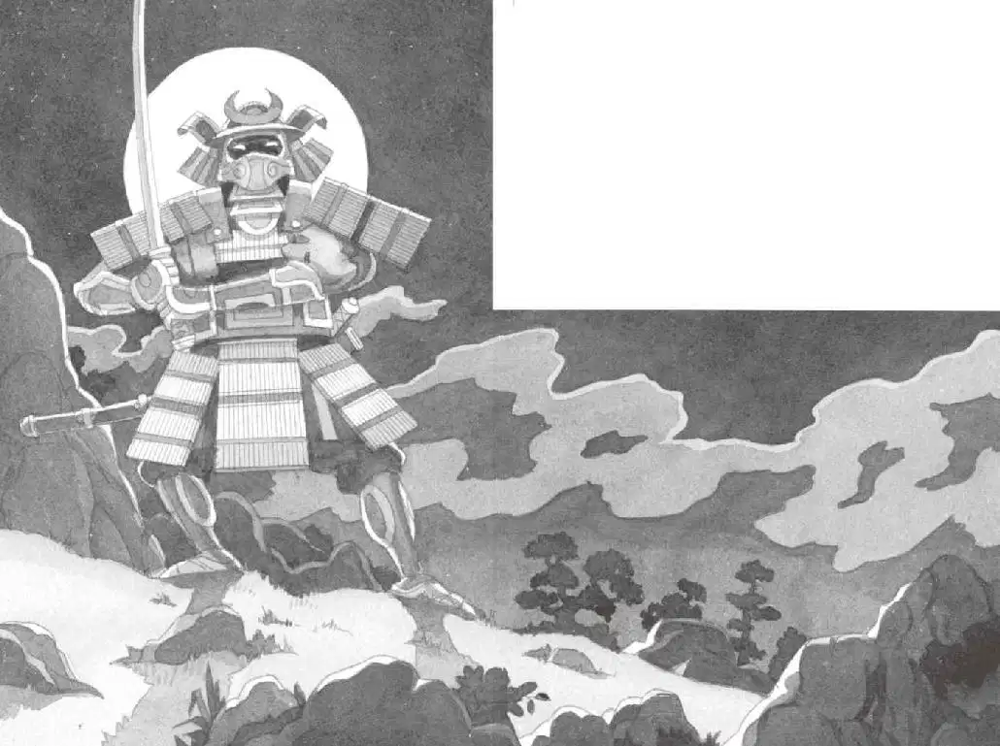

杰克和安妮一动不动地在那儿站了很长时间。
安妮先开口说话了：“我猜他刚才指的是东边，我们应该往那边走。”
“等等，”杰克说，“我需要把一些东西写下来。”
他掏出笔记本，在月光下写道：
“你看，杰克，”安妮轻声说，“我看起来像一名忍者吗？”
杰克看了看安妮。安妮把运动衫的帽子拉上来蒙住脑袋，还把帽子上的带子紧紧地系上。
她看上去确实很像一名忍者——很小的忍者。
“好主意。”杰克压低声音说，然后把自己的衣服帽子也拉上来戴到头上。
“好了，我们走吧。”安妮说。
杰克收起他的笔记本。他和安妮往东进入了树林。
他们在树丛间悄悄地穿行。密密麻麻的树，看不到尽头。
所有的树看上去都一个样。杰克被弄糊涂了。他们走的方向还对吗？
“等一等。”他说。
安妮停住了脚步。两人打量着周围的树木。
“你认为我们还在往东走吗？”杰克问。
“我猜是吧。”安妮说。
“不能只靠猜测，”杰克说，“必须弄清楚。”
“怎么弄清楚呢？”安妮说，“我们又没有指南针。”
就在这时，杰克想起了忍者大师的话。
“忍者大师说，要利用自然。”杰克说。
“怎样才能做到呢？”安妮问。
“等等，我好像想起了什么——”杰克闭上了眼睛。
他想起了在一本野营书里看到的内容。是什么呢？
“对啦，想起来了！首先，我们需要一根树枝。”杰克睁开眼睛说。
安妮捡起一根树枝。
“太棒了，现在我们需要一片有月光的空地。”杰克说。
“那儿有！”安妮说。
他们挪到了那片在树影之间被月光映照着的空地上。
“现在把树枝插在地上。”杰克吩咐道。
安妮把树枝插在了地上。
“树枝的影子看上去超过了15厘米。”杰克说，“你觉得呢？”
“看样子是的。”安妮说。
“好。那就意味着影子指示的方向是东。”杰克说。
“太棒了。”安妮赞叹道。
“所以，那边才是东边！”杰克指着另一个方向说，“至少我希望是这样。”
“我们现在是真正的忍者了！”安妮说。
“大概是吧。”杰克说，“那我们快走吧！”
安妮和杰克出发了，一路向东。但愿是东边吧。
没过多久，他们就走出了松树林，顺着怪石嶙峋的山坡往下走。大石头一块接着一块，他们走得很慢。最后，他们靠在一块巨石上休息。
“我们再检查一下方向对不对吧。”杰克说。
安妮把另一根树枝插进泥土。
“那边。”杰克说，他指着地面上的影子，“那个方向……”
安妮从巨石上方朝山下望了望。
“哎呀！”她轻声叫道。
杰克也往下看了一眼。他的心脏几乎停止了跳动。
数不清的火把正在朝山上移动。是那些武士！
杰克和安妮赶紧猫腰藏在巨石后面。
“吱吱。”小老鼠发出叫声。
“安静，花生米。”安妮说。
杰克把手伸进背包，掏出那本关于忍者的书。
“我希望这里面有能帮到我们的知识。”他说。

杰克飞快地翻着书页，最后发现了他要找的内容。是一幅图片，图片上是一些穿着竹条铠甲的武士，手里拿着刀。
杰克读道：
武士携带着两把刀，用来砍杀敌人。
安妮拍了拍杰克的肩膀。
杰克扭头看她。
安妮指着山上。
一个身影正在朝他们走来，已经离得很近了。
在月光映照下，他身上的竹条铠甲闪闪发亮，两把刀发出凛凛的寒光。
是一名古代武士！